화학분석기사(구) (2007-09-02 기출문제)
1과목: 일반화학
1. 다음 각 쌍의 2개 물질 중에서 물에 더욱 잘 녹을 것이라고 예상되는 물질을 1개씩 옳게 선택한 것은?
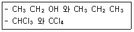
- CH3CH2OH, CHCl3
- CH3CH2OH, CCl4
- CH3CH2CH3, CHCl3
- CH3CH2CH3, CCl4
(정답률: 71%)

2. 고리구조를 갖지 않는 어떤 화합물의 화학식이 C4H8 일 경우 이 물질이 갖는 이성질체수는 모두 몇 개인가?
- 1개
- 2개
- 3개
- 4개
(정답률: 57%)
3. 원자번호가 11 이고 , 질량수가 23 인 나트륨 원자핵에서 중성자수는 얼마인가?
- 11
- 12
- 13
- 23
(정답률: 72%)
4. 수소인온의 농도가 1.0 × 10-7M 인 용액의 pH 는?
- 6.00
- 7.00
- 8.00
- 9.00
(정답률: 78%)
5. 다음의 산화환원반응식에 대한 설명 중 틀린 것은?
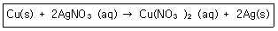
- 산화수 0 의 구리(Cu) 는 반응 후에 +2 로 산화수가 증가하였다.
- 구리(Cu)는 전자 2개를 얻어 산화된다.
- 은이온(Ag+)은 산화수가 +1에서 반응 후에는 0의 산화수를 갖는다.
- 2개의 은이온(Ag+)은 각각 1개씩의 전자를 얻어 환원 된다.
(정답률: 65%)
6. 20wt% NaOH 용액으로 1M NaOH 용액 100mL 를 만들려고 할 때 다음 중 가장 옳은 방법은?
- 20% 용액 20g 에 60g 의 물을 가한다.
- 20% 용액 20mL 에 물을 가해 100mL 로 만든다.
- 20% 용액 20g 에 물을 가해 100mL 로 만든다.
- 20% 용액 20mL 에 80mL 의 물을 가한다.
(정답률: 52%)
7. 다음 물질의 극성에 관한 설명 중 틀린 것은?
- 물은 극성 물질이다.
- 영화수소는 극성 물질이다.
- 암모니아는 비극성 물질이다.
- 이산화탄소는 비극성 물질이다.
(정답률: 69%)
8. 다음 중 실험식이 다른 것은 어는 것인가?
- CH2O
- C2H6O2
- C6H12O6
- C3H6O3
(정답률: 73%)
9. 비중이 1.8 이고, 순도가 96% 인 황산 용액의 몰농도를 구하면 약 몇 M 인가?
- 5.4
- 17.6
- 18.4
- 35.2
(정답률: 67%)
10. 40.9% C, 4.6% H, 54.5% 0 의 질량백분율 조성을 가지는 화합물의 실험식에 가장 가까운 것은?
- CH2O
- C3H4O3
- C6H5O6
- C3H6O3
(정답률: 72%)
11. 0℃, 1atm에서 0.495g 의 알루미늄이 모두 반응할 때 발생되는 수소 기체의 부피는 약 몇 L 인가?
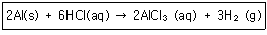
- 0.033
- 0.308
- 0.424
- 0.616
(정답률: 52%)
12. 다음 산화환원반응식의 계수 (a), (d), (c) 를 옳게 나타낸 것은? (단, n은 점수이다.)
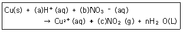
- (a):2, (b):2, (c):2
- (a):2, (b):2, (c):3
- (a):2, (b):1, (c):2
- (a):4, (b):2, (c):2
(정답률: 69%)
13. 이소프로필알코올(isopryl alxohol)음 다음 중 어느 구조인가?
- CH3-CH2-CH
- CH3-CH(OH)-CH3
- CH3-CH(OH)-CH2-CH3
- CH3-CH2-CH2-OH
(정답률: 72%)
14. Rutherford 의 알파입자 산란실험을 통하여 알게된 것은 다음 중 무엇인가?
- 전자
- 양성자
- 원자핵
- 전하
(정답률: 70%)
15. 납축전지의 전체 반응식은 다음과 같다. 산화-환원식을 이용하여 계수를 맞추고 반응식을 완결하면 PbSO4(s) 의 계수는 얼마인가?
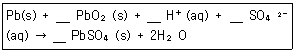
- 1
- 2
- 3
- 4
(정답률: 62%)
16. 525℃ 에서 다음 반응에 대한 평형상수 K 값은 3.35×10-3 mol/L 이다. 이 때 평형에서 이산화탄소 농도를 구하면 얼마인가?
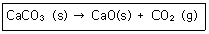
- 0.84×10-3mol/L
- 1.68×10-3mol/L
- 3.35×10-3mol/L
- 6.77×10-3mol/L
(정답률: 62%)
17. 다음 산의 명명법으로 옳은 것은?
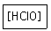
- 염소산
- 아염소산
- 과염소산
- 하이포아염소산
(정답률: 78%)
18. O2- ,F, F- 를 지름이 작은 것부터 큰 순서로 나열한 것은?
- O2-＜F＜F-
- F＜F＜O2-
- F＜O2-＜F-
- F-＜O2-＜F
(정답률: 67%)
19. 질소분자 1.07 × 1023 개는 몇 몰(mol)에 해당하는가?
- 6.85 × 1024
- 1.67 × 1021
- 11.4
- 0.178
(정답률: 65%)
20. 수용액의 산성도를 나타내는 pH 에 대한 설명 중 옳지 않은 것은?
- pH 값은 pH = log10[H3O+] 로부터 구할 수 있다.
- pH 가 7 보다 작은 경우를 산성용액이라 한다.
- 중성용액의 pH는 14 이다.
- pH meter 를 이용하여 측정할 수 있다.
(정답률: 75%)
2과목: 분석화학
21. 활동도(activity)가 0.24M 인 0.30M 용액의 활동도계수(activity coefficient)는?
- 0.24
- 0.3
- 0.8
- 1.25
(정답률: 59%)
22. 다음 직정에 관한 용어의 설명의 설명 중 틀린 것은?
- 종말점(end point)은 분석물질과 적정액이 정확하게 화학 양론적으로 가해진 점이다.
- 당량점(equivalent point)은 분석물질과 적정액이 정확하게 오차(titration error)라고 한다.
- 적정은 분석물과 시약 사이의 반응이 완전하게 완결되었다고 판단될 때 가지 표준시약을 가하는 과정이다.
- 역적정은 분석물질에 농도를 알고 있는 첫 번째 표준시약을 과량 가해 반응시키고, 두 번째 표준시약을 가하여 첫 번째 표준시약의 과량을 적정하는 방법이다.
(정답률: 48%)
23. EDTA 적정에 사용되는 xylenol orange와 같은 금속이온 지시약의 설명 중 틀린 것은?
- 금속이온 지시약은 PH에 따라 색이 변한다.
- 산화-환원제로서 전위(potential)에 따라 색이 다르다.
- 지시약은 EDTA 보다 약하게 금속과 결합해야만 한다.
- 금속이온과 결합하면 색깔이 변해야 한다.
(정답률: 62%)
24. 0.1M의 Fe2+ 50ml를 0.1M의 TI3+로 적정한다. 반응식과 각각의 표준환원전위가 다음과 같을 때 당량점에서 전위(V)는 얼마인가?
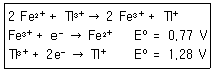
- 0.94
- 1.02
- 1.11
- 1.20
(정답률: 55%)
25. 다음 산화환원 반응에 대한 설명 중 틀린 것은?
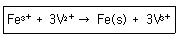
- Fe3+의 전자수가 증가 되었다.
- Fe3+가 환원되었다.
- Fe3+는 산화제이다.
- Fe(s)의 산화수는 3이다.
(정답률: 70%)
26. 다음 중 압력의 크기가 작은 값부터 큰 순서대로 옳게 표시된 것은?
- 1atm＜1Pa＜1mmHg＜1bar
- 1Pa＜1mmHg＜1bar＜1tam
- 1mmHg＜1bar＜1atm＜1Pa
- 1Pa＜1atm＜1mmHg＜1bar
(정답률: 58%)
27. 옥살산(H2C2O4)은 뜨거운 산성용애에서 과망강산 이온(MnO4-)과 다음과 같이 반응한다. 이 반응에서 지시약 역할을 하는 것은?
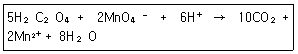
- H2C2O4
- MnO4-
- CO2
- H2O
(정답률: 74%)
28. 다음 반응에서 염기-짝산과 산-짝염기 쌈을 각각 옳게 나타낸 것은?
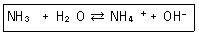
- NH3-OH-, H2O-NH4+
- NH3-NH4+, H2O-OH-
- H2O-NH3, NH4+-OH-
- H2O-NH4+, NH3-OH-
(정답률: 68%)
29. 다음 반응에서 평형상수 K는 1.6×1037일 때 이 반응의 표준전극전위 E0는 몇 V인가?
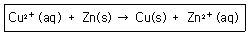
- 0.10
- 1.10
- 0.70
- 1.70
(정답률: 59%)
30. 산화ㆍ환원 적정에서 널리 쓰이는 MnO4- 용액에 대한 설명 중 틀린 것은?
- 어두운 속에 보관해야 한다.
- 모은 산 용액에서 안정하다.
- 용액 내에서 고체가 보이면 거르기와 재표준화를 하여야 한다.
- MnO4 용액은 끓여서는 안된다.
(정답률: 71%)
31. 0.122M 인 약산(HA, pKa=9.747)59.6ml 용액에 0.0431M의 NaOH 몇 mL를 첨가하면 pH 8.00용액을 만들 수 있는가?
- 29.7
- 2.97
- 0.297
- 0.0297
(정답률: 45%)
32. EDTA는 앙이온과 다음 중 무엇을 형성하기 위하여 결합하는가?
- 킬레이트
- 고분자
- 이온교환수지
- 이온결합화합물
(정답률: 68%)
33. 산화-환원적정에서 과망간산칼륨은 산성 수용액에서 많이 사용되는 산화제이다. 산성용액에서 과망간산이온이 환원되어 시료를 산회시킨다면 과망간산이온의 환원반응식은 다음 중 어느 것인가?
- MnO4-+6H++3e-→MnO(s)+3H2O
- MnO4-+8H++5e-→Mn2++4H2O
- MnO4-+6H++5e-→MnO(s)+3H2O
- MnO4-+8H++3e-→Mn4++4H2O
(정답률: 57%)
34. 다음 용액 중 이온세기를 잘못 나타낸 것은?
- 0.10M NaNO3의 이온세기는 0.10M 이다.
- 0.10M Na2SO4의 이온세기는 0.20M 이다.
- 0.020M KBr의 이온세기는 0.020M 이다.
- 0.030M ZnSO4의 이온세기는 0.12M 이다.
(정답률: 64%)
35. 다음 요오드화 반응에 대한 설명 중 틀린 것은?
- 요오드를 적정액으로 사용한다는 것은 I2에 과량의 I-가 첨가된 용약을 사용함을 의미한다.
- 요오드화 적정의 지시약으로 녹말지시약을 사용할 수 있다.
- 간접요오드 적정법에서는 환원성 분석물질을 미량의 I-에 가하여 요오드를 생성시킨 다음 이것을 적정한다.
- 환원성 분석물질이 요오드로 직접 측정되었을 때, 이 방법을 직접 요오드적정법이라 한다.
(정답률: 50%)
36. 주석이온(Sn2+) 0.1M과 주석이온(Sn4+) 0.01M의 혼합용액에서 백금전극에 의하여 측정되는 전위(E)를 구하는 식으로 옳은 것은? (단, E°는 Sn4++2e-→Sn2+에서의 표준환원 전위이다.)
- E=E°
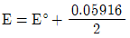
- E=E°+0.⑤916
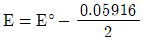
(정답률: 49%)
37. 다음 산화-환원 지시약에 대한 설명 중 틀린 것은?
- 산화-환원 지시약인 페로인(ferroin)의 환원형은 붉은색을 띤다.
- 에틸렌블루는 산-염기 지시약으로도 사용되며, 환원형은 푸른색을 띤다.
- 디페닐아민 술폰산의 산화형은 붉은 보라색이며, 환원형은 무색이다.
- 산화-환원 지시약인 페로인(ferroin)의 변색은 표준 수소전극에 대해 대략 1.1-1.2V범위에서 일어난다.
(정답률: 39%)
38. 다음 전기화학에 관한 설명으로 옳은 것은?
- 전자를 잃었을 때 산화되었다고 하며, 산화제는 전자를 잃고 자신이 산화된다.
- 전자를 얻게 되었을 때 산화되었다고 하며, 환원제는 전자를 얻고 자신이 산화된다.
- 볼트(V)의 크기는 쿨롱(C)당 주울(J)의 양이다.
- 갈바니 전지(galvenic cell)는 자발적인 화학반응으로부터 전기를 발생기키는 영구기관이다.
(정답률: 69%)
39. 염화나트륨 5.8g을 매스플라스크에 넣은 후 물을 넣어 녹인 후 100ml 까지 물을 채웠다. 염화나트륨의 물농도는 몇 M인가?
- 0.10M
- 1.0M
- 3.0M
- 10.0M
(정답률: 64%)
40. 침저과정에서 결정선장에 대한 설명 중 틀린 것은?
- 침전물의 밀자크리를 중가기키기 위하여 침전물이 생성되는 동안에 상대 과포화도를 최소화하여야 한다.
- 핵심생성(nucleation)이 지배적이라면 침전물은 매우 작은 입자로 구성된다.
- 입자성장(particle growth)이 지배적이면 침전물은 큰 밉자들로 구성한다.
- 핵김생성(nucleation) 속도는 상대 과포화도가 감소함에 따라 직선적으로 증가한다.
(정답률: 70%)
3과목: 기기분석I
41. 여러 파장을 동시에 측정하는 다색화장치(polychromator)로 사용할 수 없는 것은?
- 전하쌍기기(CCD)
- 전하주입기기(CID)
- 에셀레(Echelle)장치
- Slew scan spectrometer
(정답률: 53%)
42. 원자 분광법의 원리에 대한 설명 중 틀린 것은?
- 원자 흡수 분광법은 중성 원자가 빛에너지를 흡수하는데 기초를 둔 원자 분광법의 하나이다.
- 원자 방출 분광법은 시료에 에너지를 가하여 들뜨게 한 후 방출된 스펙트럼을 분광하여 분석하는 방법이다.
- 원자 형광 분광법은 중성 원자에 빛에너지를 가하여 들뜨게 함으로써 발생되는 형광을 분광하여 분석하는 방법이다.
- 자외선-가시선 영역의 원자 분광법은 원자 내의 최내각 전자와 전자파 간의 거동을 이용하여 분석하는 방법이다.
(정답률: 75%)
43. 불꽃 원자 흡수 분광법(FAAS)의 감도는 전열 원자 흡수분광법(ETAAS)에 비하여 좋지 않다. 그 이유로서 가장 적절한 것은?
- FAAS의 원자화 온도가 ETAAS보다 낮기 때문이다.
- FAAS에 의해 원자화시킬 때 ETAAS에서의 중성 원자 수보다 들뜬 원자수가 많기 때문이다.
- FAAS에서는 시료가 연소 기체에 의해 수 만배 희석되지만 ETAAS에서는 극소량의 시료라 해도 대부분 원자화되기 때문이다.
- FAAS는 불꽃으로 가열하기 때문에 신호/잡음 비가 크지만, ETAAS는 전기로 가열하여 신호/잡음 비가 작기 때문이다.
(정답률: 60%)
44. 염소(Cl)를 포함한 수용성유기화합물 중의 카드뮴(Cd)을 유도결합플라스마방출분광법(ICP-AES)으로 정량할 때 올바른 조작은?
- 물에 용해하므로 일정량을 용해 후 직접 정량한다.
- 유기물을 700℃에서 연소시킨 후 질산 처리하여 Cd를 정량한다.
- 질산과 황산으로 유기물을 분해시키고 황산을 제거한 후 Cd를 정량한다.
- 물에 용해시킨 후 질산을 100mL당 2mL의 비율로 가하여 산농도를 조절하고 Cd를 정량한다.
(정답률: 75%)
45. 원자화 방법 중 불꽃 원자화 광원과 비교한 플라스마 원자화 광원의 장점에 대한 설명으로 가장 옳은 것은?
- 원자 및 분자 밀도가 높다.
- 원자화 온도가 높아 원자화 효율이 좋다.
- 전자 밀도가 낮다.
- 시료 원자가 플라스마 관찰 영역에 도달할 때 체류시간이 짧다.
(정답률: 85%)
46. X-선 분광법에 대한 설명 중 틀린 것은?
- 방사성 광원은 X-선 분광법의 광원으로 사용될 수 있다.
- X-선 광원은 연속 스펙트럼과 선스펙트럼을 발생시킨다.
- X-선의 선스펙트럼은 최내각 원자 궤도함수와 관련된 전자 전이로부터 얻어진다.
- X-선의 선스펙트럼은 최외각 원자 궤도 함수와 관련된 전자 전이로부터 얻어진다.
(정답률: 64%)
47. X-선 형광법(XRF)은 시료 중의 금속 성분을 정성ㆍ정량 분석할 수 있다. 이에 대한 설명 중 틀린 것은?
- XRF는 수소와 불활성 기체를 제외한 모든 성분을 분석할 수 있다.
- XRF는 AAS나 lCP-AES와 같은 시료 전처리를 필요로 하지 않는다.
- XRF로 분석시 높은 정확도를 얻기 위해서는 시료의 매트릭스와 유사한 표준물질로 분석해야만 한다.
- XRF는 비파괴시험의 대표적인 예로서 시료 중의 대략적인 조성을 확인하고 screening 하는데 사용된다.
(정답률: 52%)
48. Zeeman 효과에 의한 바탕보정시 필요하지 않은 장치는?
- 자석
- 회전편광판
- 크세논아크등
- 속빈음극등
(정답률: 44%)
49. 2×10-5M KMnO4 용액을 1.5cm의 셀에 넣고 520nm에서 투광도를 측정하였더니 0.60를 보였다. 이 때 KMnO4의 물 흡광계수는 약 몇 L/cmㆍmol인가?
- 1.35×10-4
- 5.0×10-4
- 7395
- 20000
(정답률: 68%)
50. 다음 중 Beer 법칙의 적용 한계가 아닌 것은?
- 겉보기 이완편차
- 겉보기 화학편차
- 다색 복사선의 기기편차
- 미광복사선이 존재할 때의 기기편차
(정답률: 54%)
51. 다음 형광에 대한 설명 중 틀린 것은?
- 광원 깜빡이잡음이 관찰된다.
- 전자스핀이 변하지 않으면서 전자에너지 전이가 일어난다.
- 발광은 거의 순간적으로(10-5초) 없어진다.
- 붉은 원자증기에서 관찰된다.
(정답률: 54%)
52. 분광신호와 이를 사용하는 분석법간에 연결이 잘못된 것은?
- 복사선방출-X선 형광법
- 복사선흡수-분광광도법
- 복사선산란-핵자기공명법
- 전기전위-전위차법
(정답률: 46%)
53. 원자분광법에서 측정 시 다양한 방해가 발생하게 된다. 다음 방해 종류에 따른 해결방법을 연결한 것 중 틀린 것은?
- 스펙트럼 방해-Zeeman 바탕보정 혹은 다른 파장 선택
- 화학적 방해-해방제(Releasing agent) 사용
- 이온화방해-이온화 증기제 사용
- 시료조성방해-표준물 첨가법 사용
(정답률: 60%)
54. 다음 광학기기 및 장치 등과 관련된 용어에 대한 설명으로 옳은 것은?
- 광도계(photometer)는 한가지 또는 그 이상의 색비교 표준물을 사용하여 육안을 검출기로 사용하는 흡수측정기기이다.
- 분광기(spectroscope)는 파장이나 진동수의 함수로서 복사선의 세기에 대한 정보를 제공해주는 기기이다.
- 다중공용형(multiplex) 기기는 원하는 파장을 얻기 위하여 복사선을 거르거나 분산시키지 않고서 펙트럼의 정보를 얻는 기기이다.
- 분광계(spectrometer)는 원자 방출선을 육안으로 확인하는 데 사용되는 기기이다.
(정답률: 59%)
55. 빛을 어떤 시료에 통과시켜 99%가 흡수되었다면 흡광도는 얼마인가?
- -1
- 0.99
- 1
- 2
(정답률: 55%)
56. 1몰(mol)의 분자가 파장이 600nm인 가시광선을 흡수했을 때 증가하는 에너지의 양은 약 몇 J/mol인가? (단, 빛의 속도는 2.998×106m/s, 플랑크상수는 6.626×10-34 Jㆍs로 한다.)
- 1.19×105
- 1.99×105
- 3.31×105
- 5.52×105
(정답률: 43%)
57. 원자분광법에서 선 넓힘의 원인이 아닌 것은?
- 불확정성 효과
- Doppler 효과
- 용매 효과
- 압력 효과
(정답률: 63%)
58. 암모니아(NH3) 분자는 적외선 스펙트럼에서 몇 가지의 기준진동 방식이 가능한가?
- 3
- 4
- 5
- 6
(정답률: 80%)
59. 다음 중 단색화 장치의 구성으로서 가장 거리가 먼 것은?
- 간섬쐐기
- 회절발
- 입구슬럿
- 출구슬럿
(정답률: 71%)
60. 적외선 분광법에 사용하기 가장 적절한 시료 용기의 재질은?
- 결정성 NaCl
- 석영
- 규산염 유리
- 용융 실리카
(정답률: 72%)
4과목: 기기분석II
61. 시간주사열량법을 사용하여 산소분위기에서 고분자물질을 분석하여 그림과 같은 결과를 얻었다. 실험결과를 설면한 내용 중 옳지 않은 것은?
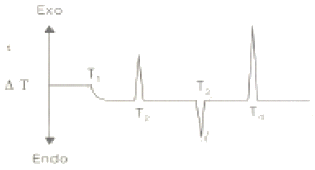
- T1은 고분자물질의 유리전이 온도이다.
- T2는 고분자의 결정화 과정에서 나타나는 방열과정이다.
- T3은 결정화된 고분자의 녹는 과정을 나타내는 흡열과정이다.
- T4는 고분자물질이 고온에서 분해되어 다양한 생성물을 생성하는 발열과정이다.
(정답률: 65%)
62. 다음 이온선택성 전극의 장점에 대한 설명 중 틀린 것은?
- 직선적 감응의 넓은 범위
- 파괴성
- 짧은 감응시간
- 색깔이나 혼탁도에 영향을 비교적 받지 않음
(정답률: 61%)
63. 선택계수(selectivity coefficient, α)는 다음 중 무엇을 나타내는가?
- 두 분석 물질 간의 상태적인 이동 속도
- 분석 물질의 띠넓어짐의 정도
- 이동상의 이동 속도
- 분석 가능한 물질의 최대수
(정답률: 61%)
64. 다음 전기분석화학에 대한 설명 중 틀린 것은?
- 물질의 환원 반응은 양극에서 일어난다.
- 농도분극은 전극표면의 시료물질 농도와 용액농도의 차이에 기인하여 발생한다.
- 과접압은 전류가 흐르는 반응용기의 용액이 갖는 저항을 극복하기 위하여 필요한 전압이다.
- 작업전극에서 시료물질의 산화반응이 일어날 때, 기준 전극에서는 시료물질의 환원반응이 수반된다.
(정답률: 63%)
65. 전자충격 이온화 방법과 화학적 이온화 방법에 대한 설명 중 틀린 것은?
- 화학적 이온화 방법으로 더 많은 시료토막이 만들어진다.
- 전자충격 이온화 방법은 시료가 열분해하는 단점을 갖고 있다.
- 화학적 이온화 방법에서도 전자충격 이온화 과정이 있다.
- 전자충격 이온화 방법은 넓은 범위의 토악화로 시료확인 가능성을 높이는 장점이 갖고 있다.
(정답률: 52%)
66. 다음 중 질량분석법에서 m/z 비에 따라 질량을 분리하는 장치가 아닌 것은? (단, m은 질량, z는 전하이다.)
- 사중극자(quadrupole)
- 이중 집중(double focusing)
- 전자 증배관(electron multiplier)
- 자기장 분석관(magnetic sector analyzer)
(정답률: 57%)
67. 다음 보기 중 녹음(melting), 결정화(crystallization), 분해(decomposition) 등과 같은 열전이(thermal transition)의 자료를 제공하는 방법을 모두 고른 것은?
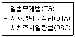
- TG, DTA, DSC
- DTA, DSC
- DSC, TG
- DSC
(정답률: 55%)
68. n-hexane, n-hexanol, benzene이 역상 HPLG에서 분리될 경우 용리 순서를 빨리 나오는 것부터 옳게 예측된 것은?
- n-hexane＞n-hexanol＞benzene
- n-hexanol＞n-hexane＞benzene
- benzene＞n-hexanol＞n-hexane
- n-hexanol＞benzene＞n-hexane
(정답률: 50%)
69. "화학 7(Chem 7)" 시험은 임상병리실에서 수행되는 시험의 70% 정도를 차지한다. 이들 중에서 이온선택전극을 사용하여 측정할 수 없는 화학종은?
- 글루코스
- 염소 이온
- 칼륨 이온
- 총 이산화탄소
(정답률: 49%)
70. 다음 설명에 해당하는 질량분석법의 이온화 방법은?
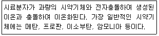
- CI(chemical ionization)
- EI(electeron impact ionization)
- FI(field ionization)
- MALDI(matrix-assisted laser desorption/ionization)
(정답률: 36%)
71. 질량분석기를 검정하는데 주로 사용되는 표준물질은?
- FAPP
- MTBSTFA
- PFTBA
- TBSI
(정답률: 57%)
72. 질량분석계를 이용하여 질량이 50.00과 50.01인 1가 이온을 분리하려면 최소한의 분해능(resolution)은 얼마인가?
- 2000
- 3000
- 4000
- 5000
(정답률: 68%)
73. 유리전극을 사용하여 용액의 pH를 측정할 때 오차에 영향을 미치지 않는 것은?
- 접촉전위
- 나트륨 오차
- 표준 완충요액
- 선택계수의 실험적 보정
(정답률: 47%)
74. 미지시료 산의 전기량법 적정(coulometric titration)에 그림에 있는 장치가 사용된다. 이 실험과 관련된 다음 설명 중 옳지 않은 것은?
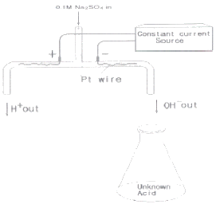
- 음극에서 수소 기체가 발생한다.
- 적정반응은 "H++OH-⇄H2O“이다.
- 황산나트륨은 산화환원반응에 참여한다.
- 종말점을 찾기 위해 pH 전극이나 지시약을 사용할 수 있다.
(정답률: 52%)
75. 그림은 어떤 시료의 얇은층크로마토그램이다. 이 시료의 지연인자(retaedation factor) Rf값은?
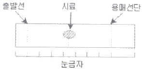
- 0.10
- 0.20
- 0.30
- 0.50
(정답률: 68%)
76. 액간접촉전위(liquid junction potential)에 대한 설명 중 틀린 것은?
- 양이온과 음이온의 확산속도가 다르기 때문에 발생한다.
- 조성이 다른 전해질 용액에 접촉할 때, 경계면에서 발생한다.
- 전극에 전기 이중층(electric double layer)이 생기는 이유이다.
- 두 용액 사이에 진한 전해질 용액을 포함한 염다리(salt bridge)를 사용하여 줄일 수 있다.
(정답률: 49%)
77. 0.001M HCI을 0.1M NaOH를 사용하여 적정할 때 용액의 비전도도 변화를 가장 잘 나타낸 모식도는?
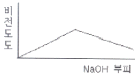
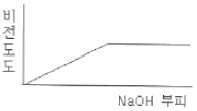
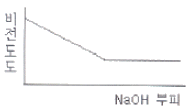
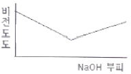
(정답률: 61%)
78. 다음 중 열법무게측정(TG)에 대한 설명 중 틀린 것은?
- 시료의 무게를 시간 또는 온도의 함수로 연속적으로 기록한다.
- 시간의 함수로 무게 또는 무게 백분율을 도시한 것을 열분석도라 한다.
- 열무게 측정에 사용되는 대부분의 전기로의 온도 범위는 1000~1200℃ 정도이다.
- 비활성 환경기류를 만들기 위한 기체 주입장치가 필요하다.
(정답률: 49%)
79. 연산 증폭기(poerational amplifier) 회로를 사용하여 작업전극에 흐르는 전류(current)신호를 전압(voltage)신호로 변환시켜서 측정하고자 한다. 가장 적절한 회로는?
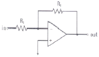
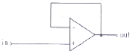
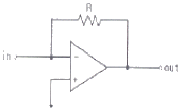
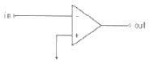
(정답률: 74%)
80. 할로겐화합물, 과산화물, 퀴논 및 니트로기와 같은 전기음성도가 큰 작용기를 포함하는 분자에 특히 예민하게 반응하는 가스크로마토그래피 검출기는?
- ECD
- FID
- AED
- TCD
(정답률: 63%)